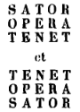

Voyage aux pays volcaniques du Vivarais
Docteur Francus
- Albin Mazon -
III
Rochemaure
Les trois étapes historiques d’un village vivarois. – Le donjon. – L’église St-Laurent. – Une inscription à deviner. – La fête de Ste-Marthe à Rochemaure. – Les démêlés locaux à propos de l’église paroissiale. – Relations aqueuses entre la Voulte et Rochemaure.
Il suffit d’un coup d’œil au voyageur qui arrive devant Rochemaure pour reconnaître dans la physionomie extérieure de ce village la trace de ses trois grandes étapes historiques :
Au sommet, le Rochemaure purement féodal, ce qu’on appelle le Château, comprenant non seulement l’ancienne habitation seigneuriale et le donjon, mais encore une cinquantaine de maisons, du milieu desquelles émergent quelques mûriers, le tout environné encore de son mur d’enceinte ;
Au milieu, Le Rochemaure moyen-âge, qu’on appelle la Ville, relié au premier par une double muraille de fortifications qui en faisait une sorte de sentinelle avancée de la première enceinte féodale. La Ville représente l’affranchissement des communes, et sa fondation remonte probablement à cette époque ;
Enfin, au bas de la colline, sur la route de Cruas au Teil et à deux pas de la voie ferrée, le Rochemaure moderne qu’on appelle encore le Faubourg.
Le donjon de Rochemaure qui est si hardiment perché sur le dike basaltique de Rignas, fut évidemment le noyau de tous les ouvrages fortifiées qui s’élevèrent ensuite autour de lui. On attribue sa construction à Adhémar de Monteil qui, dit-on, revenu riche des dépouilles sarrasines conquises aux croisades, acheta les baronnies d’Aps et de Rochemaure pour lesquelles il rendait hommage à l’évêque de Viviers. C’est ce même Adhémar qui fonda la ville de Montélimar située en face de l’autre côté du Rhône ; mais le nom de Rochemaure, rapproché du rôle que les Sarrasins ont joué en Vivarais, permet de supposer que, pendant les siècles précédents, une position aussi importante n’avait pas été négligée par ces derniers, en sorte qu’ils pourraient bien avoir été les premiers constructeurs du donjon.
L’histoire de Rochemaure est encore couverte d’obscurité. Voici les rares lueurs que nous avons recueillies :
En 1209, l’évêque de Viviers reçoit de Giraud ou Gérald Adhémar le château de Rochemaure comme témoignage éternel de la piété des Adhémar, mais il se contente de l’hommage de ce seigneur et lui restitue ce château à titre de futur fief épiscopal (1).
En 1210, Adhémar de Poitiers, comte de Valentinois, acquiert un droit de gîte à Cléon-d’Andran, de Guirald Adhémar, seigneur de Monteil, pour 9,000 sols ita scilicet quod ab omni obligatione novem millium solidorum pro quibus erat michi obligatum castrum de Rochamaura et censsus de Cleu, in perpetuum absolvo et quitium facio et pignus castri de Rochamaura vobis remitto et desemparo. C’est Adhémar de Poitiers qui parle à Guirald Adhémar (2).
En 1301, un autre Giraud Adhémar, seigneur de Rochemaure et d’Aps, exempte de la taille, sous la seule réserve des cas impériaux, ses sujets d’Aubignas (3).
Au XVe siècle, ce sont les barons de la Voulte qui sont les seigneurs de Rochemaure.
On dit que plus tard cette seigneurie passa à la famille de Cheylus et ensuite à celle des de Fages, mais je n’ai pu vérifier si le fait est exact.
Il est certain qu’à la fin du 16e et au commencement du 17e siècle, les seigneurs Geys de Pampellonne et Hilaire de Jovyac que nous voyons commander à Rochemaure, y sont avec le titre de châtelains pour le service du roi.
Pendant tout le 18e siècle, la seigneurie de Rochemaure appartenait aux Rohan-Soubise.
On monte au donjon par un escalier très-raide de 80 marches, en pierres de Cruas posées sur les têtes de basalte ; au milieu, on remarque à droite l’ouverture de la citerne du donjon.
A part la tour supérieure du donjon où l’on ne peut monter qu’avec une échelle, toutes les pièces supérieures, depuis longtemps dépourvues de toiture, ont été transformées par le temps en terrasses gazonnées d’où l’on jouit de la vue la plus splendide qui se puisse imaginer. On peut y voir aussi par la disposition de ces pièces, à quel point la défense des places de guerre était alors tenace. Les combattants du moyen-âge disputaient le terrain pied à pied. Le village de Rochemaure pris, le vainqueur avait encore à emporter le château, puis chaque compartiment du donjon, jusqu’à la partie supérieure où l’assiégé pouvait encore, sauf la famine, tenir un certain temps comme dans un réduit inexpugnable.
Le château dont on voit les ruines à côté du donjon et qui n’en est séparé que par une sorte de préau, est d’une époque bien moins ancienne. On suppose qu’il fut construit par les Cheylus. On y montre les traces de la chapelle et une citerne où il y a toujours de l’eau. Le reste de l’édifice n’est qu’un amas de ruines dont les murs extérieurs sont seuls en partie conservés, et où il nous a été impossible de retrouver les traces luxueuses dont quelques écrivains ont parlé.
Deux murs fortifiés descendent à peu près parallèlement, l’un du donjon et l’autre de l’extrémité opposée du Château, le premier aboutissant à la ruelle qui longe la maison Privat et qui porte le nom de rue des Tournelles, et le second se reliant à la tour du Gua qui se dressait, sur un autre dike basaltique, au milieu de la Ville, comme le représentant toujours debout de l’autorité seigneuriale.
Vers le milieu de cette dernière muraille, entre le château et l’église de Notre-Dame des Anges, il y a une porte murée. La tradition veut qu’il existe là une cavité où un seigneur d’Aps, maître de Rochemaure, aurait fait enfermer une fille du peuple qui avait refusé de se rendre à ses désirs.
L’auteur de Vals et ses environs, M. Chabalier, a conclu, d’une lettre du curé de Rochemaure en 1762, que le château existait encore à cette époque et qu’il avait été ruiné seulement sous la Révolution. Mais je tiens de témoins oculaires de la Révolution que le château ne différait guère alors de ce qu’il est aujourd’hui, qu’il était sans toiture et déjà aux trois quarts détruit (probablement depuis le siège qu’il eut à subir en 1631). Les papiers publics dont les révolutionnaires s’emparèrent en 1793 furent brûlés aux Brassières, devant la maison Coulet.
La plus ancienne église de Rochemaure, dite de St-Laurent, est à 4 ou 500 mètres du château, en allant vers Chenavari. Elle était probablement isolée alors comme aujourd’hui, car on ne distingue pas de ruines dans les alentours, ce qui peut s’expliquer, d’ailleurs, par sa proximité du château qui en commandait tous les abords.
L’église St-Laurent est en ruines sauf le chœur, où les desservants de Rochemaure viennent dire la messe, suivie de procession, tous les jours pendant l’octave de St-Laurent. On y va aussi pour les Rogations. Cette église est encore un but de pèlerinage pour beaucoup d’habitants des environs. On m’a cité un brave homme qui y vient chaque année depuis trente ans pendant l’octave de St-Laurent.
Le chœur est séparé par un mur moderne du reste de la nef qui est sans toiture et dont les murailles sont seules debout. On y voit à gauche, entourés d’une grille et ombragés de cyprès entremêlés de lierre, de beaux tombeaux en marbre d’une famille du pays.
Au-dessus de la porte qui conduit de la nef dans le chœur on aperçoit incrustée dans le mur moderne une plaque en pierre de Cruas, de 20 à 25 centimètres de hauteur sur 35 à 40 de largeur, un peu détériorée aux angles, où l’on peut lire la curieuse inscription suivante :

Les caractères sont de l’époque romane. Ils sont tous très-bien conservés sauf ceux du mot QIROI (?) qui n’est qu’imparfaitement reconnaissable. On peut supposer que c’est la première partie du nom de l’auteur du rébus, ou plutôt du maçon. Ce nom d’Humbert a été retrouvé, je crois, à Cruas. La locution ME FEEIT pour ME FECIT est une forme, ou une faute d’orthographe, assez fréquente au moyen-âge.
J’ai entendu émettre plusieurs avis au sujet de cette inscription.
Un de nos compatriotes, fort instruit et très-intelligent cependant, se basant sur ce que le mot opera signifie, dans la haute latinité, tout ce qui a rapport aux travaux des champs et que rota, dans Virgile et autres auteurs, est pris pour chariot, prétend que l’inscription n’est qu’une vulgaire enseigne industrielle et la traduit ainsi :
Le fabricant Arépon tient tout ce qui a rapport aux travaux des champs, y compris les chariots.
L’auteur de cette interprétation hardie avoue que le mot tenere n’est nulle part employé, dans les inscriptions romaines, avec le sens qui lui est prêté ici, d’où il conclut que l’inscription est relativement peu ancienne et imprégnée d’une forte odeur de terroir. Les mots Umbert me fecit le confirment dans cette idée, car Umbert ou Humbert est un nom propre d’origine bourguignonne ou lombarde, qui ne se rencontre guère avant le Xe siècle et seulement dans l’est de la France ou le nord de l’Italie. Il observe, en outre, que si l’inscription remontait seulement au XIIe siècle, il y aurait Umbertus et non Umbert.
Un autre de nos compatriotes, des plus érudits, a bien voulu nous communiquer sur le même sujet de savantes conjectures qui, bien que passant à côté de la version véritable, seront lues avec intérêt par les personnes compétentes.
Je lui laisse la parole.
« Vous avez dû remarquer que cette inscription, qu’elle soit lue de gauche à droite, suivant notre système d’écriture, ou de droite à gauche, selon le système d’écriture sémitique, présente le même ordre de lettres, c’est-à-dire que, en commençant par la fin, ou, pour me servir d’une image, en la prenant à rebrousse-poil, on obtient exactement la même lecture. Rangée en cercle ou en forme de roue, elle pourrait donc se lire dans quelques sens que la roue tournât. Ce singulier miroitement, qui n’est ici qu’un jeu, rappelle néanmoins un vieux système d’écriture que l’on trouve employé dans de très-anciennes inscriptions grecques et que l’on appelle Boustrophédone. Dans cette écriture, la première ligne commençait ordinairement à gauche et la seconde reprenait à droite de la fin de la première, pour revenir au point de départ de celle-ci et tourner ensuite. L’ensemble des lignes offrait de la sorte, ainsi que s’expriment les savants eux-mêmes, une certaine analogie avec les sillons tracés par le bœuf dans l’aller et le retour de la charrue : de là le nom de boustrophédone, de bous bœuf et de strepho je tourne. Le « semeur » et les « roues » de l’inscription de Rochemaure paraissent faire allusion à tout cela.
« Vous aurez remarqué ensuite que, dans cette même inscription, non seulement on obtient une lecture identique de gauche à droite et de droite à gauche, mais encore que cette lecture ne varie pas, qu’elle soit faite de haut en bas ou de bas en haut. Si l’on tient l’inscription pour une roue, ainsi qu’on pourrait y être autorisé par ce que je viens de dire, on serait quelque peu fondé à supposer, en conséquence, que l’ensemble, dans son arrangement, figure l’enchevêtrement mystérieux des roues animées de la vision d’Ezéchiel, roues qui se mouvaient les unes dans les autres, allant à la fois de gauche à droite, de droite à gauche, de haut en bas et de bas en haut : per quatuor partes earum euntes ibant. Ce logodédale était une figure de Dieu et du monde qu’il anime : Spiritus Dei erat in rotis, dit le prophète. On s’en explique donc tout naturellement la présence dans une église où cette figure pouvait fort bien remplacer le triangle habituel avec l’œil ou le nom de Jéhovah au centre.
« Quant à la traduction que je puis donner, elle ne saurait être non plus que conjecturale. Il n’y a néanmoins dans l’inscription qu’un seul mot qui offre quelque difficulté : c’est Arepo. Toutefois, en le divisant et en lisant A repo, on peut obtenir pour toute la phrase un sens répondant assez bien au caractère du symbole. Repo ablatif de repum étant pris pour un correspondant du grec rembos et repos, le texte restitué : Sator a repo tenet opera rotas peut se traduire ainsi : Le semeur empêche avec soin les roues de dévier. Ici le Semeur, celui qui répand la vie comme une semence et en dirige le cours, c’est Dieu, le Dieu suprême des Sémites, que les Latins identifièrent tout à la fois à leur Satur ou Saturne qualifié par eux de Père de l’Agriculture, et à la Fortune dont un des symboles était la roue, originairement la roue de la vie. Peut-être entrevoit-on mieux avec mon exégèse la pensée qu’a eue le prophète Ezéchiel en disant que l’esprit de vie était dans les roues de sa mystérieuse vision… »
Il y a quelque temps, je fis parvenir à M. Léon Rénier, de l’Institut, un fac-simile de l’inscription en le priant de me donner son opinion à cet égard. Le savant membre de l’Académie des Inscriptions et Belles-Lettres trouva la pièce fort curieuse et la conserva pour l’examiner, mais en déclarant, à première vue, qu’il la considérait comme une ancienne table de jeu servant à un amusement dont la tradition s’était perdue.
Tout récemment, j’ai reçu d’un des collègues de M. Léon Rénier, celui qui avait bien voulu être mon obligeant intermédiaire dans cette circonstance, la note suivante :
« L’étude attentive que M. Léon Rénier a faite de l’inscription de Rochemaure l’a pleinement confirmé dans sa première appréciation. Il demeure convaincu que cette prétendue inscription n’est autre chose qu’une table de jeu, une sorte de damier destiné à quelque jeu inconnu dans le genre des dames ou des échecs. »
La véritable interprétation de l’inscription de Rochemaure est évidemment celle qui a paru dans le Magasin pittoresque de 1854 et qui est, je crois, due à M. Jules Quicherat. L’éminent philologue, reconnaissant une inscription boustrophédone l’a lue, à la manière dont les bœufs tracent leurs sillons, c’est-à-dire la première ligne de gauche à droite, la seconde de droite à gauche, la troisième d’abord de gauche à droite puis de droite à gauche ; la quatrième de gauche à droite, et, enfin, la cinquième de droite à gauche, et il a trouvé l’affirmation répétée d’une pensée éminemment philosophique, morale et religieuse, c’est-à-dire :

De quelque côté que l’on retourne l’inscription, on retrouve toujours la même devise qui correspond à l’adage : Comme on a semé, l’on cueille, ou, selon une formule plus moderne : A chacun selon ses œuvres, ou bien enfin, s’il est permis à l’archéologie de donner des leçons à la politique : Un peuple n’a jamais que le gouvernement qu’il mérite.
La moralité intentionnelle de l’instruction est donc hors de doute. Un pur damier ne parle pas si sagement. Il est bon d’observer cependant que la version de M. Quicherat et l’opinion de M. Léon Renier ne sont absolument pas contradictoires. Rien n’empêche de supposer que l’inscription primitive, expression d’une haute pensée morale et religieuse, soit devenue plus tard une table de jeu. Les exemples de faits analogues ne manquent pas dans l’histoire.
Pour peu, d’ailleurs, qu’on observe l’inscription, on y découvre une foule de détails nouveaux qui ne sont pas tous certainement l’effet du hasard. En voici quelques-uns :
Le mot Tenet, qui est le trait d’union de la double formule, forme, dans sa double direction horizontale et verticale, une croix, comme pour sceller du signe évangélique une des maximes fondamentales de l’Evangile, peut-être aussi par une discrète allusion graphique au mystère de la Trinité.
La croix revient plusieurs fois dans ce mystique tableau : avec les diagonales croisées formées par les lignes idéales unissant les deux S et les deux P, comme avec les diagonales rectangulaires formées par les deux O et les deux A.
Sur les huit lettres que comprend l’inscription, une seule, l’N n’y figure qu’une fois. Aussi se trouve-t-elle au centre du tableau, comme pour figurer le Dieu unique ou tout aboutit et autour duquel tout converge.
Les quatre E et les quatre T roulent autour de l’N dans des cercles idéaux comme les planètes autour du soleil.
Je me suis amusé, un jour, à marquer avec des crayons de couleurs différentes les trois mots de l’inscription : Sator en bleu, Opera en vert et Tenet en rouge, et j’ai eu sous les yeux un ensemble aux couleurs harmoniques où le grand carré bleu de Sator contenait le monde, et la croix rouge de Tenet l’animait, tandis que la forte charpente verte d’Opera semblait là pour consolider l’édifice.
Le procédé en lecture spirale indiqué plus haut donne non seulement Sator operat tenet, mais aussi Rotas Arepo tenet. Je suis fortement tenté de croire que cette devise avait aussi un sens perdu aujourd’hui. Qui sait si, dans le langage usuel de l’époque, Arepo ne signifiait pas Ouvrier ?
Les lettres de l’inscription lues en direction oblique ne présentent que des assemblages de voyelles seules ou des consonnes seules, n’offrant absolument aucun sens, tandis qu’en ligne droite la devise resplendit dans toutes les directions, comme pour indiquer que la voie droite seule conduit à la vérité et qu’il n’y a qu’erreur et ténèbres dans les voies tortueuses.
On peut observer encore que les premières lettres, en transposant le T, donnent : Sta-Ora (arrête-toi, prie !), ce qui convient admirablement à la porte d’une église, mais il me semble imprudent d’insister sur cette heureuse coïncidence, car les malins pourraient lui opposer celle-ci : Sat orare (assez prier !)
Les Orientaux cultivaient la cabale et attribuaient des propriétés magiques à certaines combinaisons de lettres. De là les abracadabra. La sorcellerie européenne s’empara de ces superstitions pendant les croisades. Les livres de magie gothique en sont pleins. Peu à peu cela devint une manie et un puéril amusement. A partir de la Renaissance, l’on fabrique des inscriptions dont les lettres forment des combinaisons curieuses.
Pour bien des gens sans doute, ce n’était là qu’un pur jeu d’esprit, mais ce n’était pas toujours le cas, et je demande une exception honorable pour celle de Rochemaure.
On dirait que l’auteur inconnu de l’inscription a voulu donner par elle une image du monde :
Dieu, figuré par l’N du milieu et par le grand carré des Sator, formant à la fois le centre et les limites de toute chose ;
La croix soutenant l’humanité ;
Enfin la grande loi de justice, que chacun est traité selon ses œuvres (opera), apparaissant précise, éclatante, de quelque côté que l’on retourne ce microcosme.
O décadence des choses d’ici bas ! L’œuvre patiente d’un chercheur sublime a pu devenir, dans la suite des siècles, grâce à son agencement symétrique, la table d’un jeu de dés où la perte où le gain dépendaient sans doute des lettres couvertes par les dés. On peut supposer que celui qui couvrait l’N, lettre unique dans le tableau gagnait deux fois plus que celui qui couvrait le P ou l’S qui y figurent chacun en double, et quatre fois plus que celui qui couvrait l’E, l’A, l’O et le T qui y figurent quatre fois. Un amateur trouverait facilement d’autres combinaisons, sans parler de celles qui pourraient résulter de la formation fortuite de nouveaux mots au moyen de dés portant eux-mêmes un lettre différente sur chacune de leur faces. Dans ce dernier cas, il faudrait supposer un jeu de gens lettrés, de moines probablement. L’église de St-Laurent appartenait aux chanoines de St-Ruf.
Les mots Umbert me fecit placés à côté du tableau concordent beaucoup mieux, il faut l’avouer, avec l’hypothèse d’une table de jeu qu’avec celle d’une inscription mystique, mais sans exclure cette dernière, surtout en admettant, comme nous l’avons fait, la transformation de la destination primitive de l’inscription.
Si, comme je le pense, l’inscription n’a pas été retrouvée ailleurs que dans notre pays, on peut supposer qu’elle est l’œuvre d’un moine, aussi philosophe que savant, et patient par-dessus tout, qui, trouvant sous sa main une grande vérité et fasciné par elle, aura passé des années à la travailler, la tailler comme un diamant à facettes, dans une forme qui rappelât les grands symboles religieux, et qui, par une sorte de miracle, a réussi à faire tenir le tout dans 25 lettres de l’alphabet. Quelle différence avec les errements modernes où les mots, sinon les idées, sont aussi innombrables que les sables de la mer ! Aussi, tandis que le Temps emporte tant de flots verbeux, discours ou livres, dans l’Océan de l’oubli, voilà une formule qui doit à sa concision, à la fois bizarre et harmonique, d’avoir traversé les âges et de se retrouver aussi jeune, aussi piquante et aussi vraie qu’au temps de Charlemagne, le jour où un observateur l’aperçoit fortuitement accrochée, comme une médaille divine, aux murs ruinés d’une vieille église.
En voilà, je crois, assez, surtout de la part d’un touriste, sur un sujet aussi grave. La question est ouverte.
L’église de St-Laurent fut détruite par les protestants, lors de leur expédition sur Viviers où ils brûlèrent toute la nef de la cathédrale. Les protestants tentèrent également d’emporter Rochemaure (la Ville), mais ils trouvèrent de la part de la population une résistance invincible. Les femmes déployèrent un courage héroïque et couvrirent les assaillants de pierres et d’huile bouillante. Néanmoins, une porte de la ville avait sauté et les protestants allaient devenir maîtres de la place. Les habitants de Rochemaure firent alors un vœu à sainte Marthe, dont c’était la fête (29 juillet). Aussitôt, d’après la tradition, on vit la plaine du Dauphiné et tout l’horizon en feu, et les protestants effrayés abandonnèrent leur entreprise pour continuer leur marche sur Viviers. Une cérémonie a lieu chaque année, le 29 juillet, en commémoration de cet événement. Le curé, entouré des fidèles, monte de l’église à la Ville, et, arrivé devant l’ancienne porte de Ste-Marthe, chante trois fois : Sancta Martha, ora pro nobis ! Il récite ensuite l’oraison de la sainte. Les anciens consuls de Rochemaure avaient alloué, pour cette cérémonie, une somme annuelle de trois livres tournois qui a été payée jusqu’à la Révolution. Jusqu’à ces dernières années, la municipalité se faisait un devoir d’assister à cette cérémonie.
On voit entre Rochemaure et Jovyac les ruines d’une autre église, probablement la plus ancienne du pays. Elle était dédiée à saint Pierre. On a trouvé dans ses ruines des squelettes entiers couchés dans des cercueils formés de grandes pierres plates, comme ceux découverts récemment à St-Priest.
Après la destruction de l’église St-Laurent, le seigneur de Rochemaure voulut faire de la chapelle du château l’église paroissiale. Les gens de la Ville qui probablement voyaient dans cette mesure l’indice d’un renouvellement de sujétion, résistèrent vigoureusement. L’affaire fut portée devant le parlement de Toulouse qui partagea le différend, mais dans un sens plutôt favorable aux habitants. L’emplacement de la nouvelle église paroissiale fut fixé au sommet de la Ville, dans la partie la plus rapprochée du château. Cette église dédiée à Notre-Dame-des-Anges, paraît, du reste, avoir été bâtie sur les ruines d’un autre édifice religieux, si l’on en juge par des restes de piliers qu’on voit à l’entrée et dans les tribunes.
On remarque sur la paroi extérieure du clocher deux pierres sculptées représentant deux têtes qu’on peut prendre pour celles d’un prêtre et d’une prêtresse d’Isis. La prêtresse a au front un bandeau sur lequel on a gravé, évidemment après coup, la date de 1500. Il est probable que ces têtes appartenaient au précédent édifice religieux et que le constructeur de la nouvelle église n’a rien trouvé de mieux que de graver la date de son œuvre au front de la vieille médaille de pierre placée par lui au clocher.
L’église de Notre-Dame-des-Anges est entourée du cimetière. Sur le fronton de la porte principale sont sculptées les armoiries des anciens seigneurs.
Dans l’église on remarque plusieurs pierres tombales et un vieux tableau qui, à défaut de mérite artistique, a du moins celui de se rattacher à un souvenir d’histoire locale : il représente le seigneur Hilaire de Jovyac converti au catholicisme en 1591 par une apparition de sainte Anne. L’original est au château de Jovyac.
L’église de Notre-Dame des Anges rappelle un grand fait historique, celui qui exerça peut-être le plus d’influence sur les destinées du Vivarais au moyen-âge : c’est là, paraît-il, que fut signé en 1284, l’acte de pariage entre le représentant du roi Philippe-le-Bel et l’abbé de Mazan pour la fondation de Villeneuve-de-Berg, acte qui amena l’introduction de la justice royale en Vivarais et mis un frein aux abus de la féodalité.
Le progrès des temps, en faisant descendre insensiblement les gens de Rochemaure de la montagne vers la plaine, a occasionné plus d’une dissidence au sujet de l’église. Dans la première moitié du siècle dernier, un certain nombre de gens de la Ville se plaignirent de la position trop élevée de Notre-Dame-des-Anges et firent construire, en 1721, la chapelle des Pénitents. De nos jours, les gens de la plaine se sont plaints à leur tour et il en est résulté la nouvelle église, située au bas de la montagne, à peu de distance de la gare. Mais cela ne s’est pas passé sans résistance de la part des habitants de la Ville et du Château, et l’on a pu voir une fois de plus combien il est dangereux de toucher, même avec les plus grands ménagements, à des habitudes locales, surtout lorsqu’elles se rattachent à des intérêts particuliers. Les habitants de la ville, qui trouvaient tout naturel d’obliger ceux du faubourg à monter chez eux pour les offices religieux, trouvèrent souverainement arbitraire qu’on les fit descendre en bas pour la même cause. Il y eut un moment où ils chantèrent les offices tout seuls, où ils enterrèrent leurs morts sans l’intervention du clergé et où, ne pouvant dire la messe eux-mêmes, ils menacèrent d’appeler un pasteur protestant. Les dissidents auraient dû songer que le fait contre lequel ils s’insurgeaient sortit de la force même des choses et que la même cause qui avait fait descendre l’église du château à la ville devait plus tard la faire descendre de la ville au faubourg. Cette cause, c’est l’accroissement de la sécurité générale et du développement du commerce qui, en attirant les populations sur le parcours des voies de communication au fond des vallées, devaient nécessairement y faire transporter tôt ou tard tous les édifices publics, civils et religieux. Quand les habitants de la ville et du château abandonnent leurs anciennes habitations pour se porter en bas, car on peut voir dans ces deux quartiers bon nombre de maisons entièrement abandonnées, comment veut-on que le culte ne se déplace pas aussi ?
La nouvelle église de Rochemaure fait honneur à ceux qui en ont conçu le plan. Les proportions en sont parfaites. Le bénitier et les fonts baptismaux sont faits avec des fragments de silex fortement cimentés.
Pour en finir avec les anciens monuments religieux de Rochemaure, je dois citer :
Le prieuré de St-Pierre des Fontaines, au village des Fontaines, entre Meysse et Rochemaure ; le dernier prieur était un abbé de Chabrillan.
Une chapelle dédiée à sainte Madeleine, au pied de la Roche, entre Meysse et St-Pierre des Fontaines,
La chapelle de l’hôpital, dédiée à saint Nicolas, près du presbytère actuel ; l’hôpital était là où est aujourd’hui l’hôtel de ville ; cette extrémité du faubourg porte encore le nom de quartier de l’hôpital ;
Une chapelle de saint Joseph dans la Ville, à quelques pas de la chapelle des Pénitents, indiquée par les restes d’une vieille façade gothique où l’on peut lire les noms de Jhesu et de Joseph.
A côté des ruines de la chapelle Ste-Madeleine, au pied de la Roche, on a découvert des tombes anciennes avec des médailles de Constantin et des restes de mosaïque. Tous ces objets ont été vendus à M. Valentin, juge d’instruction à Montélimar, qui est le grand collectionneur d’antiquités de la contrée. Les indices de constructions romaines ne sont pas rares de ce côté du Rhône. Il y en avait une dans la partie supérieure de l’enclos Mallet, au quartier dit des Faysses ; le sol y est jonché de fragments de marbres et de briques romaines et un mur, émergeant au milieu des vignes, indique l’endroit où l’on pourrait fructueusement opérer quelques fouilles.
En descendant de Notre-Dame-des-Anges dans la ville, on remarque une maison dont le portail est en pierre de Cruas polies, qui a appartenu successivement aux familles nobles le Blanc et du Verdier.
Un fait qui montre combien l’origine des fontaines est quelquefois éloignée, s’est passé il y a quelque temps à Rochemaure.
Un jour, les mineurs de la Voulte firent jaillir une colonne d’eau dans une des galeries en exploitation, et les fontaines de Rochemaure se trouvèrent aussitôt teintées de rouge. La municipalité de Rochemaure ayant réclamé et le trou ayant été bouché avec un fort béton, l’eau des fontaines redevint claire. Il y a 25 kilomètres entre les deux localités qui, de plus, font chacune partie d’un groupe de montagnes distinct et sont séparées par les trois vallées d’Ouvèze, de Chomérac et de Barrès.
- Columbi. De rebus gestis episcoporum vivariensium, p. 112.
- Charte citée par l’abbé Chevalier dans les Documents relatifs au Dauphiné, publiés par l’Académie delphinale en 1868.
- Rouchier. Histoire du Vivarais, t- 1er, p. 450.